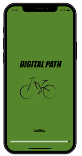

Esam komanda Izotopi un piedāvājam Jums aplikācijas DIGITAL PATH konceptu. Koncepts ir izstrādāts Atvērto ģeotelpisko datu hakatona skolēniem ietvaros. Komanda pārstāv Ozolnieku vidusskolu. Esam 12. klases skolnieces Evelīna un Evija. Ar padomu mums palīdz skolotājs Dainis Šantars.
COVID-19 pandēmijas laikā, kad notiek mājsēdes, ir parādījušās daudz jaunas, kā arī saasinājušās jau esošas problēmas, kuras savu ietekmi uz cilvēka veselību ir tikai palielinājušas. Tā ir mūsu mentālā veselība, kā arī fiziskais stāvoklis. Liekais svars mēdz ar katru gadu tikai palielināties. Tas veicina veselības problēmas. Mūsu aplikācija nespēs ar visām šīm problēmām tikt galā, bet, musuprāt, tā varētu radīt motivāciju piedalīties fiziskās aktivitātēs un palīdzēt “izvēdināt galvu”.
Aplikācija palīdzēs velosipēdistiem, kuri izlēmuši atpūsties dabā. Te ir iespējams sastādīt maršrutus un arī apskatīties, vai nenāk lietus mākoņi. Fleksošana dabā spridzina!
Aplikācijas dizains varētu būt krāsains un saprotams. Ar to var iepazīties vietnē Proto.io
Mēs izmēģinājām zīmēt kartes ar Python palīdzību, ģenerēt ceļu tīklus un maršrutus ar osmnx paīdzību, tomēr tas nebija efektīvi.
Aplikācijai daudz piemērotāks izrādījās MapBox serviss, kurš paredzēts dažādu aplikāciju izstrādātājiem. Tur veidotās kartes ir viegli iegulstamas iOS, Android un Web aplikācijās. Viņu bibliotēka maršutu sastādīšanai izrādījās daudz ērtāka par osmnx un Cyclestreets API.
Mēs papildinājām karti ar vairākiem slāņiem no pieejamajiem atvērtajiem datiem. Velopastaigām, kā piemērotus izvēlējāmies datus par:
Lai izbrauciens būtu patīkamāks, pirms uzsākt kustību (arī tās laikā), lietotājs var noskaidrot, vai aiz debess pamales jau nedrūzmējas tumšu mākoņu bari. Datus mēs iegūstam ar Rainwiever API palīdzību.
Karte ar maršrutu nospraušanu Informācija par lietus mākoņiem